小林指着屏幕，声音压得很低："你看这段代码——A组的API响应格式和我框架的一模一样，连变量命名都没改。这不是巧合。"
三张牌：管理端口、竞品分析文件、开源侵权。
但现在不是出牌的时候。老周第一轮就拿了第一——我先掀桌，评委会觉得我是输不起。
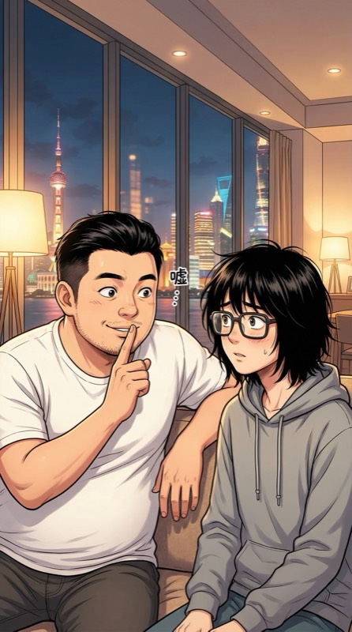
我："先别声张。咱们先赢第二轮——实力说话。等时机到了，这些证据的杀伤力翻倍。"
小林："你的意思是……让他继续用我的框架？"
我笑了："让他用。用得越深，到时候越难脱身。"
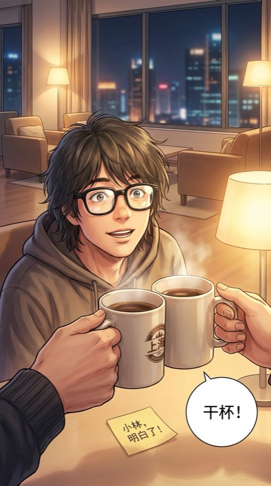
小林从困惑到恍然，大框眼镜后面的眼睛亮了："……你这招够阴的。我喜欢。"
咖啡杯轻轻一碰。夜色深沉，上海灯火在窗外流淌。
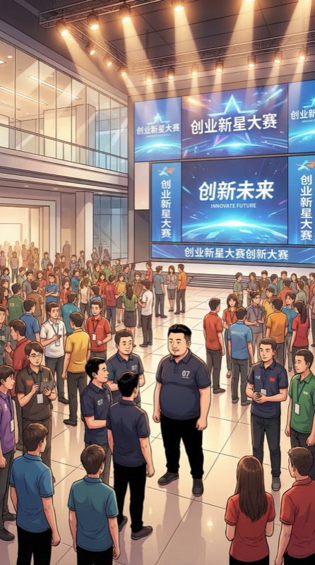
创业塔大厅，全员集合。墙上的巨幕亮了——张导师的脸占满整个屏幕。
张导师："第二轮挑战——"
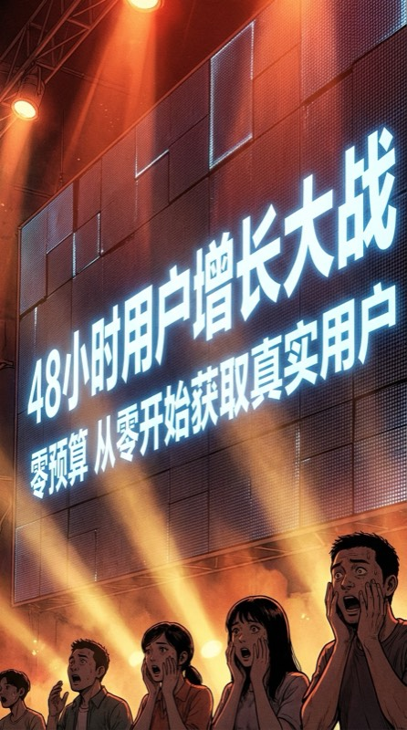
大屏幕切换，巨大的字在每个人的瞳孔里燃烧：
「48小时用户增长大战」
零预算。从零开始获取真实用户。
全场骚动。
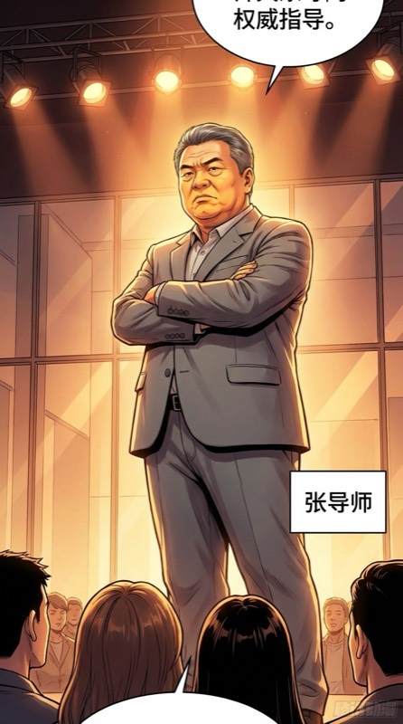
张导师的声音像打雷："不许刷量、不许买量、不许找亲戚。我们有反作弊系统——比你们的AI还聪明。"
"48小时后，真实活跃用户数最低的组——淘汰两人。"
全场倒吸一口凉气。
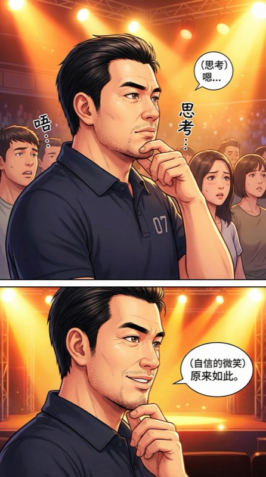
零预算获客？这对做工具的A组来说几乎不可能——B2B获客哪有那么快。
但我做的是内容……内容天然有传播性。
嘴角不自觉地翘了起来。
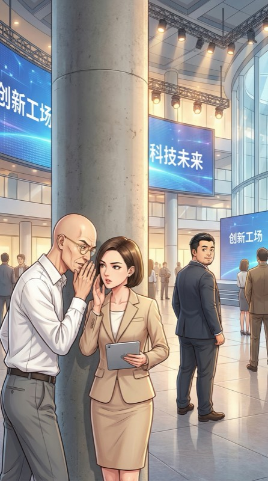
余光扫到角落——老周和苏雨晴头凑在一起低声说着什么。苏雨晴点了点头，目光扫了我一眼。
他们在商量什么？但现在没时间多想。
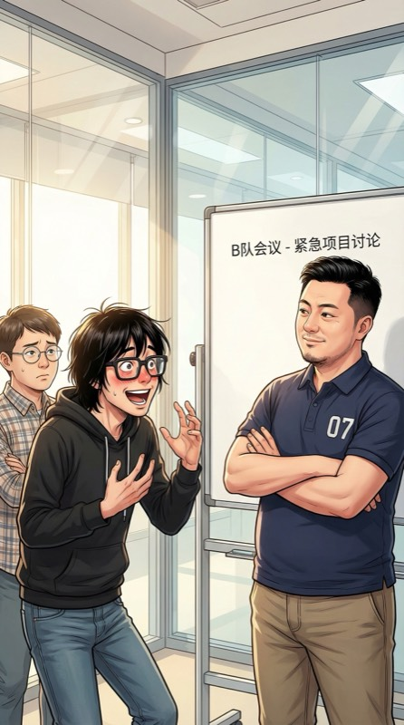
陈博士："我们的AI故事渲染——让它在哪传播？"
小林眼睛亮了："GitHub开源社区！"
我："……你要让大妈在GitHub上看漫画？"
陈博士把差点喷出来的水咽了回去。小林的脸红了。
我拍了下桌子："短视频。把demo输入经典网文片段——输出30秒竖屏漫画预览。然后投到短视频平台。"
陈博士："但是零预算……"
我："内容就是预算。好内容自己传播。"
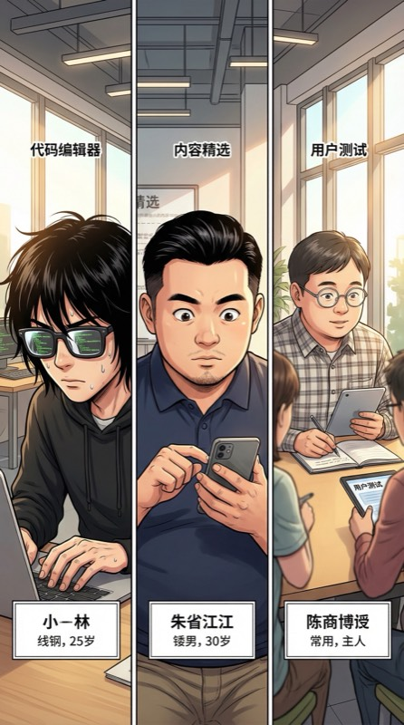
疯狂执行开始——
🕑 +2h 小林调模型，屏幕上代码像瀑布。
🕗 +8h 我选网文素材，一篇一篇试，挑出最炸裂的开头。
🕐 +16h 陈博士终于有了真活——做用户测试，而且……他居然很擅长。
第一条短视频发布。我亲自写的文案：
"你给我三秒，我把你喜欢的小说变成漫画。不信？划过去。"
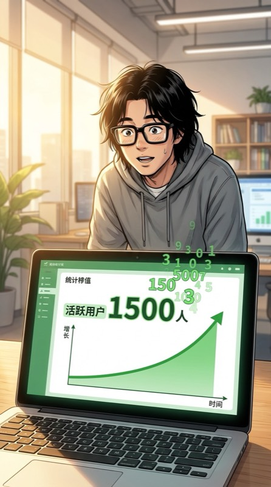
数据开始动了。
第一个小时：50。第二个小时：200。第六个小时——
1500
小林瞪大眼睛，眼镜差点从鼻梁滑下来："它在……指数增长……"
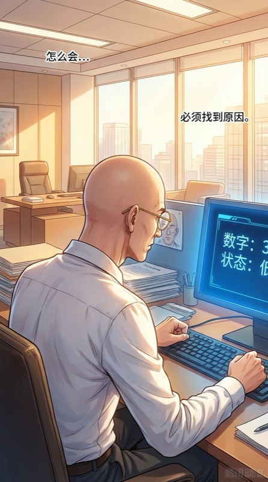
同一时刻，A组工位。
老周面前的屏幕上，用户数停在个位数。AI办公助手，2B产品——48小时获客？做梦。
他第一次皱起了眉头。屏幕的蓝光映在他光亮的头顶上，像一盏冷冷的灯。
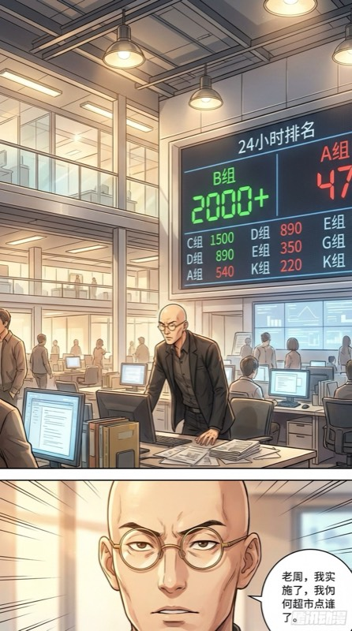
24小时节点。巨幕上实时更新——
B组：2000+ ⎜ A组：47
老周坐不住了——离开工位，走向苏雨晴。
苏雨晴突然出现在我面前，职业笑容恰到好处："朱总，有没有兴趣合作？"
苏雨晴找我？她是A组的。这个时候来——不可能是巧合。
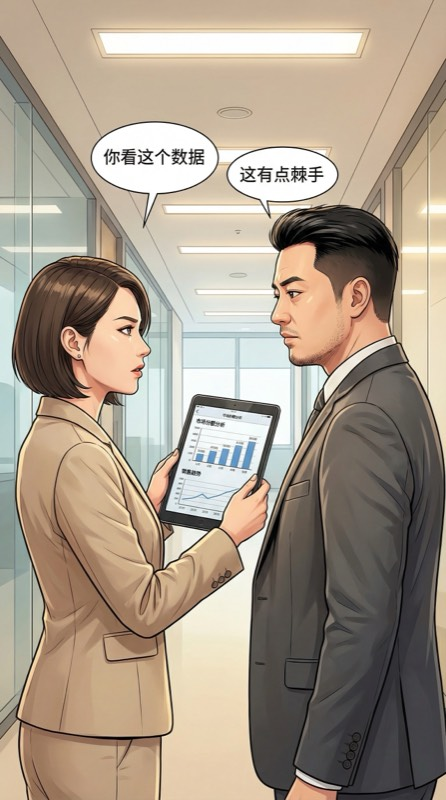
苏雨晴举起iPad："我的直播电商AI有100万粉丝的达人资源。你的内容加我的分发等于双赢。你的用户数再翻10倍。"
数字很漂亮。提议很诱人。太诱人了。
好提议。太好了。好到让我怀疑——这是苏雨晴自己的主意，还是老周让她来的？
如果是老周，那用意是什么？让我依赖外部流量，然后在关键时刻抽走？
我笑着说："可以试试。不过我有个条件——我们各自保留独立获客通道。合作的流量算双方共有，但我自己的短视频通道继续跑。"
苏雨晴眼中闪过一丝……失望？"……好。"
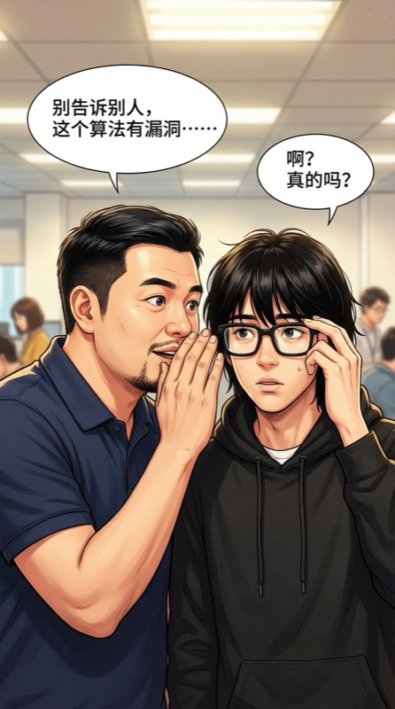
我回到B组，压低声音对小林："她来得太巧了。盯紧我们的数据后台——如果有异常流量波动，第一时间告诉我。"
小林推了推眼镜："你是说她可能在我们的系统里装了什么？"
"不确定。但在这栋楼里，相信数据比相信人安全。"
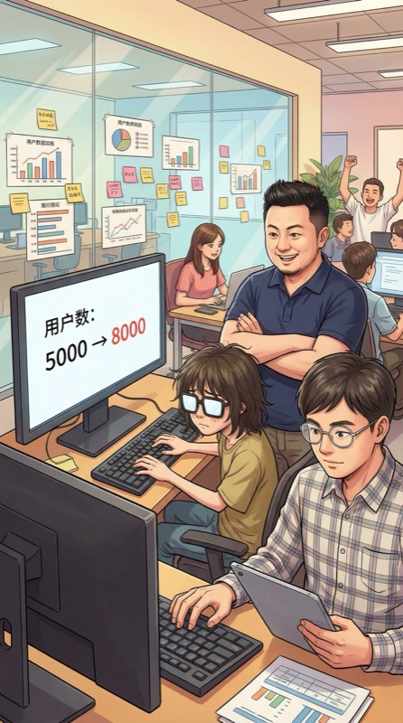
合作开始。苏雨晴果然带来了流量——达人开始转发B组的AI漫画视频。
3000 → 5000 → 8000
漂亮的数字。但心里不踏实。
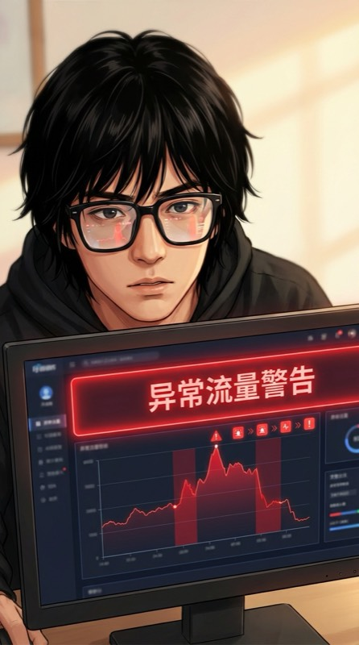
36小时节点——屏幕上突然弹出红色警告。
大量用户注册后3分钟内取消关注。流失率异常。
小林表情严肃："不对。正常用户不会这样。要么是机器人刷的假量，要么是——有人故意洗掉我们的数据。"
我盯着屏幕："如果被检测到我们的用户里有刷量行为……张导师说了，有反作弊系统。"
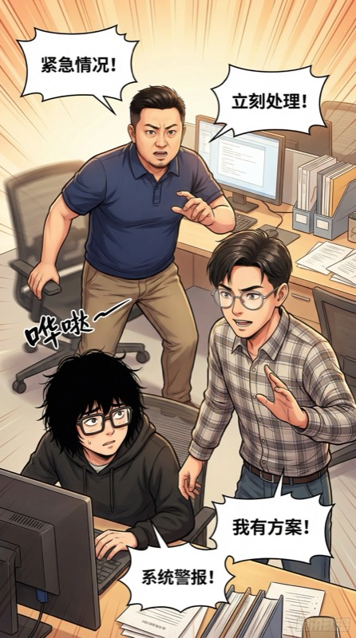
我站起来："小林，分两步。第一，把苏雨晴带来的流量通道彻底隔离——所有从达人链接来的用户打上标签。第二，启动纯有机通道——全靠内容传播的用户。两条线数据不能混。"
陈博士突然站起来，眼镜反光："我来做用户真实性检测——我做AI医疗的，生物特征验证是基本功。"
我和小林同时看向他："……你早说啊！"
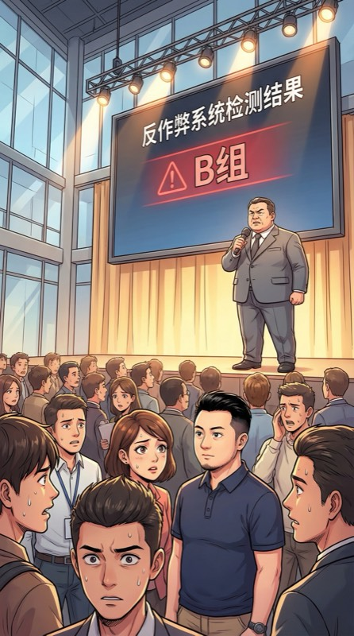
48小时结束。全员集合。
巨幕上，反作弊系统先亮红灯——B组被标记"异常流量"。
全场倒吸气。所有人看向我。
张导师："B组，解释一下？"
我站了起来。
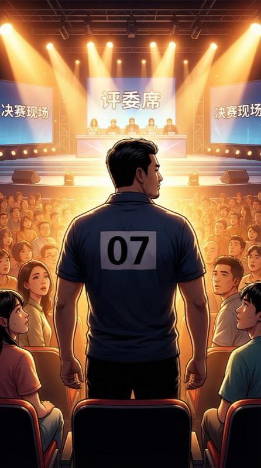
我背对窗外的城市灯火，面向12个选手和3个评委。
我："我们确实收到了异常流量——来自A组苏雨晴提供的达人资源。我们在36小时节点发现后，已经做了两件事。"
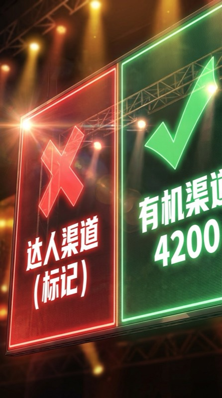
我："第一，我们把达人渠道的流量完全隔离，单独标记。这些用户不计入我们的成绩。"
大屏幕数据一分为二——
达人渠道 ✕ ⎜ 有机渠道：4200
苏雨晴的表情微微僵住。
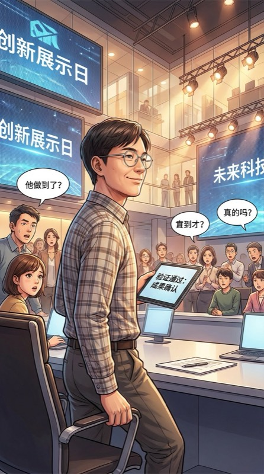
我："第二，陈博士——我们的'用户测试员'——用他的生物特征验证系统检测了所有有机用户的真实性。100%通过。"
陈博士第一次在全场面前笑了。那个一直被当透明人的"用户测试员"，此刻站在聚光灯下。
张导师的表情从严厉变成……饶有兴致："继续。"
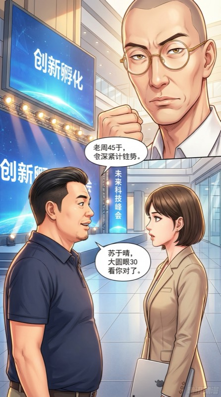
我转向苏雨晴，语气平静——
我："苏总，我不确定异常流量是不是你有意为之。也许是达人本身在刷量。但我想说——"
"好内容不需要假数据。"
"4200个真实用户，每一个都是被内容吸引来的。"
全场安静。远处，老周的拳头微微攥紧。
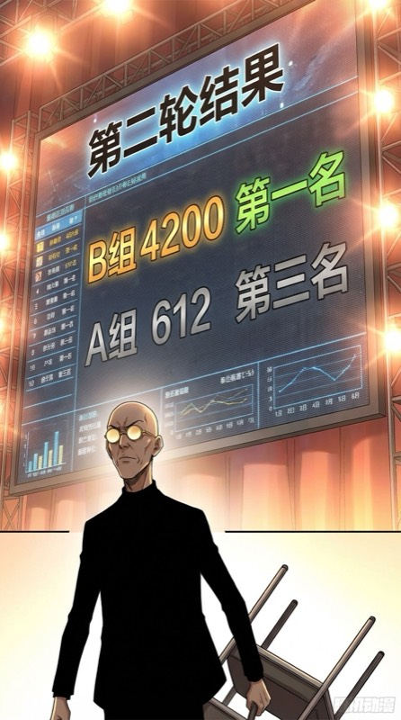
结果公布——
🏆 B组 4200（有机验证）— 第一名
A组 612 — 第三名
D组 1800（30%存疑）
张导师："A组和D组各淘汰一人。"
老周猛地站起来。椅子在地板上发出刺耳的 嘎——
淘汰环节结束。深夜。我独自走在走廊里。
老周从拐角走出来，挡住了去路。
白衬衫微微凌乱，第一次失去了标志性的从容。
老周："朱总，你今天很精彩。"
我停下脚步。
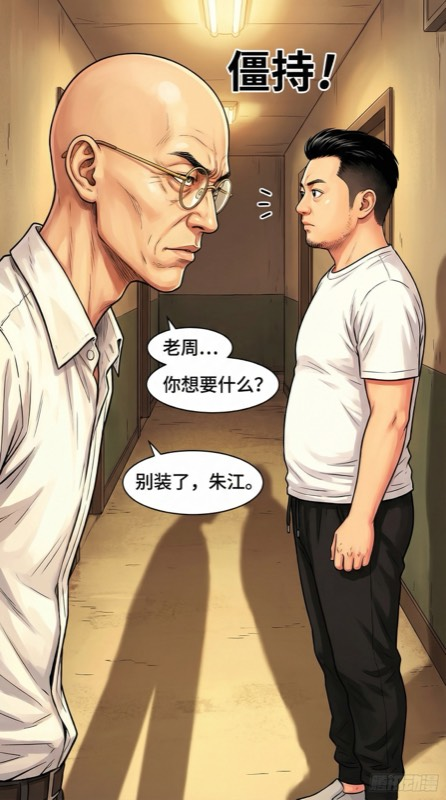
老周靠近一步，走廊灯光在两人之间拉出两条长长的影子——
"因为在这12个人里——不，在整个中国AI创业圈——你是我唯一看不透的人。"
"做内容的，该是最好忽悠的。但你不是。"
这是威胁还是赞美？
我微微笑了。
我："老周，你分析我可以。但下次——把文件名里的缩写改改。'zhuj'太明显了。"
老周的表情——震惊。然后是一种新的表情：尊重。
老周："……你什么时候发现的？"
我拍拍他肩膀走过去："第一天。晚安，老周。"
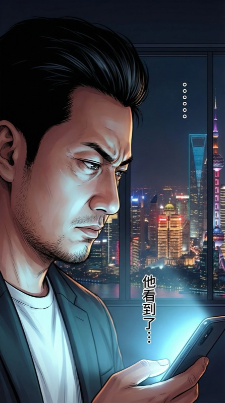
我走进房间，手机震动。小林的消息——
小林："我查了一下——A组的AI助手用户增长这么低，但他们的后端负载异常高。他们在用'办公助手'做掩护——真正在跑的是另一个项目。
而且那个项目……用的不只是我的框架。它还在调用一个我没见过的算力集群。"
老周，你藏的东西——比我以为的多得多。
第三章预告：老周的隐藏项目浮出水面。
那个神秘的算力集群背后，是一盘更大的棋……
综艺×AI创业《最强创业者》· V5 · 朱江的故事